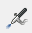

Crear un grafiti
Este ejemplo consiste en realizar un grafiti con algunas de las herramientas de pintura disponibles en Gimp. Emplearemos el pincel, el aerógrafo, la herramienta para insertar texto... y todo ello con distintos tipos de estilos de pincel y colores. Con ello, vamos a introducir las herramientas básicas de pintura.
Los pasos a seguir para realizar la práctica son los siguientes:
- Creamos una nueva imagen con Archivo → Nuevo. En el cuadro de diálogo que aparece escribimos Anchura 300 y Altura 300 y en Opciones avanzadas seleccionamos Espacio de color: Color RGB y Rellenar con: Blanco y aceptamos finalmente. Se nos abre un archivo de imagen en blanco que podremos ampliar o reducir con las teclas + y - del teclado.
- Seleccionamos la herramienta Pincel (al pinchar dos veces sobre ella, aparecen sus propiedades) y elegimos como propiedades Confetti 27x28 y Color de frente rojo (tamaño por defecto 20), dibujando posteriormente tres tirabuzones verticales en el espacio en blanco.
- Nuevamente seleccionamos Pincel del tipo 2. Star 55x55 y Color de frente verde, dibujando tres tirabuzones verticales más.
- Otro tipo de Pincel que utilizaremos será Sparks 60x60, para dibujar cuatro tirabuzones horizontales.
- Seleccionamos Aerógrafo  del tipo Galaxy (AP) 53x49 y Color de frente azul, para colocar puntos en zonas blancas del dibujo (para conseguir colores más oscuros con el aerógrafo es necesario mantener pulsado el mismo durante un tiempo).
- Firmamos el cuadro obtenido con la herramienta de Texto
 , seleccionando el color negro y escribiendo nuestro nombre, que podremos colocar en la zona deseada de nuestro tapiz y con el tamaño y tipo de letra que queramos.
, seleccionando el color negro y escribiendo nuestro nombre, que podremos colocar en la zona deseada de nuestro tapiz y con el tamaño y tipo de letra que queramos. - Finalmente guardamos el proyecto como imagen mediante Archivo → Exportar como..., llamando al archivo Tutorial 1.png
Puedes seguir los pasos en el videotutorial siguiente:
La lista de reproducción con todos los vídeos que se han elaborado para este recurso educativo, se encuentra disponible en este enlace.